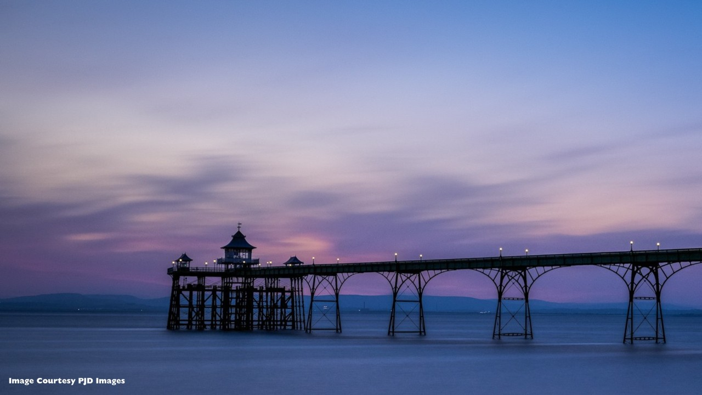
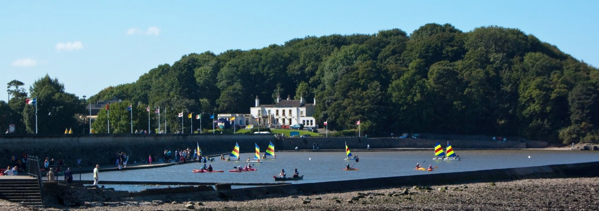

Plan a family day out
Coastal Walks
The Clevedon Coastal Walk combines dramatic tidal views of the Bristol Channel, rich Victorian seaside heritage, and rugged clifftops.
Explore Clevedon
About this place
Clevedon’s coastal paths offer a wonderful mix of sea views, interesting landmarks and fresh air, making them perfect for family adventures. Stroll along the seafront, take in views of the iconic pier, spot wildlife and enjoy plenty of space for little legs to explore.
Whether you choose a gentle walk by the water or a longer wander along the coastline, this is a lovely place to slow down, enjoy the scenery and make happy memories together.

A little planning, a lovely day
Plan your visit
Clevedon Pier, The Beach, Clevedon, BS21 7QU
Clevedon town centre has several public car parks within walking distance. The seafront promenade is mostly flat and suitable for buggies and scooters.
Open in Google MapsMeet you by the sea
Explore the waterfront, pause for a picnic and make a day of it.
← Back to parks and walks